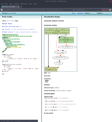

Tamarin Prover
The Tamarin prover is a security protocol verification tool that supports both falsification (attack finding) and unbounded verification in the symbolic model. Security protocols are specified as multiset rewriting systems and analyzed with respect to temporal
first-order properties.
Tamarin has been successfully used to analyze or support the development of modern security
protocols, including TLS 1.3 [1,2],
5G‑AKA [3,4], Noise [5],
EMV (Chip-and-pin) [6], and
Apple iMessage [7].
Get the docs
Install Tamarin
Research Papers and Theses
Papers on Tamarin and its theory
- JCS 2022 paper [PDF]: the extended journal paper published in the Journal of Computer Security, about automatic generation of souces lemmas: "Automatic generation of sources lemmas in TAMARIN: towards automatic proofs of security protocols", by Véronique Cortier, Stéphanie Delaune, Jannik Dreier, Elise Klein.
- IEEE Security and Privacy Magazine 2022 paper [PDF]: the paper published in the IEEE Security and Privacy Magazine, presenting an overview of Tamarin's success stories: "Tamarin: Verification of Large-Scale, Real World, Cryptographic Protocols", by David Basin, Cas Cremers, Jannik Dreier, Ralf Sasse.
- ESORICS 2020 paper [PDF]: the paper presented at ESORICS, about the automatic generation of sources lemmas: " Automatic generation of sources lemmas in Tamarin: towards automatic proofs of security protocol", by Véronique Cortier, Stéphanie Delaune, Jannik Dreier.
- JCS 2020 paper [PDF]: the extended journal paper published in the Journal of Computer Security, about the support for Exclusive-Or: "Verification of stateful cryptographic protocols with exclusive OR", by Jannik Dreier, Lucca Hirschi, Saša Radomirović, Ralf Sasse.
- CSF 2019 paper [PDF]: the paper presented at CSF, about adding support and models for capturing Diffie-Hellman-like protocols even more accurately: "Prime, Order Please! Revisiting Small Subgroup and Invalid Curve Attacks on Protocols using Diffie-Hellman", by Cas Cremers and Dennis Jackson.
- CSF 2018 paper [PDF]: the paper presented at CSF, about adding support for Exclusive-Or: "Automated Unbounded Verification of Stateful Cryptographic Protocols with Exclusive OR", by Jannik Dreier, Lucca Hirschi, Saša Radomirović, Ralf Sasse.
- SIGLOG Newsletter 2017 paper [PDF]: the paper published in the SIGLOG Newsletter October 2017, presenting an overview of Tamarin and its features: "Symbolically Analyzing Security Protocols using TAMARIN", by David Basin, Cas Cremers, Jannik Dreier, Ralf Sasse.
- POST 2017 paper [PDF]: the paper presented at POST, about allowing user-defined equational theories to be non-subterm-convergent: "Beyond Subterm-Convergent Equational Theories in Automated Verification of Stateful Protocols", by Jannik Dreier, Charles Duménil, Steve Kremer, Ralf Sasse.
- CCS 2015 paper [PDF]: the paper presented at CCS, also available as Extended Version with proofs; about observational equivalence for Tamarin: "Automated Symbolic Proofs of Observational Equivalence", by David Basin, Jannik Dreier, Ralf Sasse.
- S&P 2014 paper [PDF]: the paper presented at S&P, about group protocols and bilinear pairing extensions: "Automated Verification of Group Key Agreement Protocols", by Benedikt Schmidt, Ralf Sasse, Cas Cremers, David Basin.
- CAV 2013 paper [PDF]: the paper presented at CAV, presenting the tool in more detail: "The TAMARIN Prover for the Symbolic Analysis of Security Protocols", by Simon Meier, Benedikt Schmidt, Cas Cremers, David Basin.
- CSF 2012 paper [PDF]: the paper presented at CSF, also available as extended version [PDF]: extended version that contains the full proofs and additional examples; original paper introducing Tamarin Prover: "Automated Analysis of Diffie-Hellman Protocols and Advanced Security Properties", by Benedikt Schmidt, Simon Meier, Cas Cremers, David Basin.
- Meier's PhD thesis [PDF]: provides a detailed explanation of the theory and implementation of Tamarin including inductive invariants and type assertions.
- Schmidt's PhD thesis [PDF]: provides a detailed explanation of the theory and application of Tamarin including the reasoning about Diffie-Hellman exponentiation
and bilinear pairing.
- Staub's bachelor thesis [PDF]: about the implementation of the original version of Tamarin's GUI.
Tamarin Extensions
- "Seems Legit: Automated Analysis of Subtle Attacks on Protocols that use Signatures" [PDF], by Dennis Jackson, Cas Cremers, Katriel Cohn-Gordon, and Ralf Sasse, presented at ACM CCS 2019.
- "Distance-Bounding Protocols: Verification without Time and Location" [PDF], by Sjouke Mauw, Zach Smith, Jorge Toro-Pozo, Rolando Trujillo-Rasua, presented at S&P 2018.
- "A Novel Approach for Reasoning about Liveness in Cryptographic Protocols and its Application to Fair Exchange" [PDF], by Michael Backes, Jannik Dreier, Steve Kremer, Robert Künnemann, presented at EuroS&P 2017.
- "Modeling Human Errors in Security Protocols" [PDF], by David Basin, Saša Radomirović, Lara Schmid, presented at CSF 2016.
- "Alice and Bob Meet Equational Theories" [PDF], by David Basin, Michel Keller, Saša Radomirović, Ralf Sasse, paper presented at Logic, Rewriting, and Concurrency 2015 - Festschrift Symposium in Honor of José Meseguer.
- "Automated analysis of security protocols with global state" [PDF], by Steve Kremer, Robert Künnemann, paper presented at S&P 2014, also avaible extended journal version at Journal of Computer Security: [PDF].
- Xenia Hofmeier's master thesis [PDF]: Formalizing Aggregate Signatures in the Symbolic Model
[zip].
- Andrina Denzler's bachelor Thesis [PDF]: on how to automate the
analysis of communications protocols with human errors.
- Dorela Kozmai's bachelor Thesis [PDF]: on how to translate Tamarin specifications
into Alice&Bob protocol notation, with implementation available [zip].
- Lara Schmid's master Thesis [PDF]: on how one can model human errors in secure communication protocols.
- Michel Keller's bachelor thesis [PDF]: about translating Alice&Bob
protocol notation into Tamarin's input language, with implementation available [tar.gz].
Papers using Tamarin
- "A formal analysis of IKEv2’s post-quantum extension" [PDF], by Stefan-Lukas Gazdag, Sophia Grundner-Culemann, Tobias Guggemos, Tobias Heider and Daniel Loebenberger, presented at ACSAC 2021.
- "Card Brand Mixup Attack: Bypassing the PIN in non-Visa Cards by Using Them for Visa Transactions " [PDF], by David Basin, Ralf Sasse, and Jorge Toro-Pozo, presented at Usenix Security 2021.
- "The EMV Standard: Break, Fix, Verify" [PDF], by David Basin, Ralf Sasse, and Jorge Toro-Pozo, presented at IEEE Security and Privacy 2021.
- "Clone Detection in Secure Messaging: Improving Post-Compromise Security in Practice" [PDF], by Cas Cremers, Benjamin Kiesl, Jaiden Fairoze, and Aurora Naska, presented at ACM CCS 2020.
- "Formal Analysis and Implementation of a TPM 2.0-based Direct Anonymous Attestation Scheme" [PDF], by Jorden Whitefield, Liqun Chen, Ralf Sasse, Steve Schneider, Helen Treharne, Stephan Wesemeyer, presented at ACM ASIACCS 2020.
- "A Formal Analysis of IEEE 802.11's WPA2: Countering the Kracks Caused by Cracking the Counters" [PDF], by Cas Cremers, Benjamin Kiesl, and Niklas Medinger, presented at USENIX 2020.
- "A Spectral Analysis of Noise: A Comprehensive, Automated, Formal Analysis of Diffie-Hellman Protocols" [PDF], by Guillaume Girol, Lucca Hirschi, Ralf Sassse, Dennis Jackson, Cas Cremers, and David Basin, presented at USENIX 2020.
- "A Symbolic Analysis of ECC-based Direct Anonymous Attestation" [PDF], by Jorden Whitefield, Liqun Chen, Ralf Sasse, Steve Schneider, Helen Treharne, Stephan Wesemeyer, presented at IEEE EuroS&P 2019.
- "Component-Based Formal Analysis of 5G-AKA: Channel Assumptions and Session Confusion" [PDF], by Cas Cremers and Martin Dehnel-Wild, presented at NDSS 2019.
- "Secure Authentication in the Grid: A formal analysis of DNP3: SAv5" [PDF], by Cas Cremers, Martin Dehnel-Wild, Kevin Milner, published in Journal of Computer Security, 2018.
- "A Formal Analysis of 5G Authentication" [PDF], by David Basin, Jannik Dreier, Lucca Hirschi, Saša Radomirović, Ralf Sasse, Vincent Stettler, presented at CCS 2018.
- "Alethea: A Provably Secure Random Sample Voting Protocol" [PDF], by David Basin, Saša Radomirović, Lara Schmid, presented at CSF 2018.
- "A Comprehensive Symbolic Analysis of TLS 1.3" [PDF], by Cas Cremers, Marko Horvat, Jonathan Hoyland, Sam Scott, Thyla van der Merwe, presented at CCS 2017.
- "Formal Analysis of Combinations of Secure Protocols" [PDF], by Elliott Blot, Jannik Dreier, Pascal Lafourcade, presented at FPS 2017.
- "Towards a Mechanized Proof of Selene Receipt-Freeness and Vote-Privacy" [PDF], by Alessandro Bruni, Eva Drewsen, Carsten Schürmann, presented at E-Vote-ID 2017.
- "Secure Authentication in the Grid: A formal analysis of DNP3: SAv5" [PDF], by Cas Cremers, Martin Dehnel-Wild, Kevin Milner, presented at ESORICS 2017.
- "Formal Analysis of V2X Revocation Protocols" [PDF] [Source], by Jorden Whitefield, Liqun Chen, Frank Kargl, Andrew Paverd, Steve Schneider, Helen Treharne, Stephan Wesemeyer, presented at STM 2017.
- "Formally Verifying Flow Integrity Properties in Industrial Systems" [PDF], by Jannik Dreier, Maxime Puys, Marie-Laure Potet, Pascal Lafourcade, Jean-Louis Roch, presented at SECRYPT 2017.
- "Designing and proving an EMV-compliant payment protocol for mobile devices" [PDF], by Véronique Cortier, Alicia Filipiak, Saïd Gharout, Jacques Traoré, presented at EuroS&P 2017.
- "Automated Analysis of Secure Internet of Things Protocols" [PDF], by Jun Young Kim, Ralph Holz, Wen Hu, Sanjay Jha, presented at ACSAC 2017.
- "Automated Analysis and Verification of TLS 1.3: 0-RTT, Resumption and Delayed Authentication" [PDF], by Cas Cremers, Marko Horvat, Sam Scott, Thyla van der Merwe, presented at S&P 2016.
- "Automated Backward Analysis of PKCS#11 v2.20" [PDF], by Robert Künnemann, presented at POST 2105.
- "ARPKI: Attack Resilient Public-Key Infrastructure" [PDF], by David Basin, Cas Cremers, Tiffany Hyun-Jin Kim, Adrian Perrig, Ralf Sasse, Pawel Szalachowski, presented at CCS 2014, also available extended journal version at Transactions on Dependable and Secure Computing: [PDF].
- Jorden Whitefield's PhD thesis [PDF]: Formal Analysis and Applications of Direct Anonymous Attestation
[zip].
- Sabina Fischlin's master thesis [PDF]: Formalizing Zero-Knowledge Proofs in the Symbolic Model
[zip].
- Mauro Zenoni's master thesis [PDF]: SCION's Hidden Paths Design Formal Security Analysis
[zip].
- Angela Rellstab's master thesis [PDF]: Formalizing and Verifying Generations of AKA Protocols
[zip].
- Sandra Dünki's master thesis [PDF]: Modelling and Analysis of Web Applications in Tamarin
[zip].
- Xenia Hofmeier's bachelor thesis [PDF]: Formal Analysis of Web Single-Sign On Protocols using Tamarin
[zip].
- Guillaume Girol's master thesis [PDF]: Formalizing and Verifying the Security Protocols from the Noise Framework
[zip].
- Andris Suter-Dörig's bachelor thesis [PDF]: Formalizing and Verifying the Security Protocols from the Noise Framework
[zip].
- David Lanzenberger's bachelor thesis [PDF]: 5G protocols analysis and model
for Tamarin
[zip].
- Vincent Stettler's bachelor thesis [PDF]: TLS1.3,v13 analysis
and model for Tamarin [zip].
Screenshots

Introduction page

Tamarin Attack Display
Sourcecode and Mailing List
The Tamarin prover is open-source software. Its code and issue tracker are available at https://github.com/tamarin-prover/tamarin-prover. Note
that the issue tracker is only intended for tool issues, i.e., reporting potential bugs, and not for asking
questions.
Tamarin's low-volume mailing list/forum for announcements, asking questions,
and discussion is
https://groups.google.com/group/tamarin-prover. The
mailing list can be used if you have questions related to the theory, modeling, or using the tool.
For other inquiries (not bug reports!) you can reach the current maintainers of the Tamarin Prover via mail at
tamarin-prover-maintainers@googlegroups.com.
Installation
Installation instructions are in the manual.